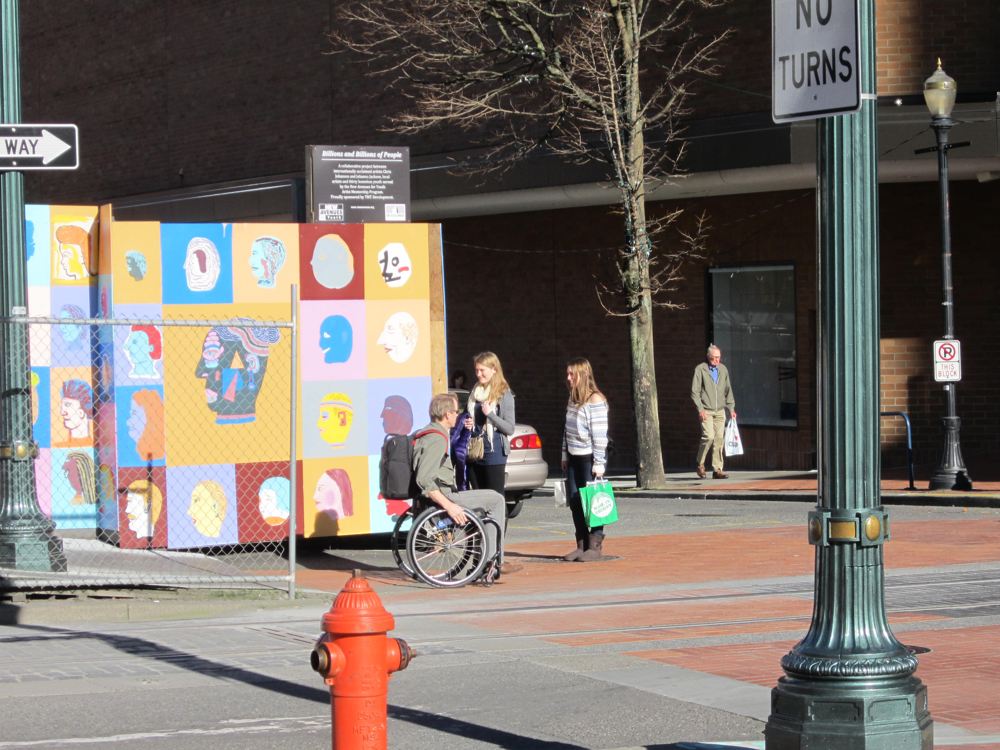

For groups to note condition and quality of curb ramps that are located in a routeable pedestrian network. This network is a model of sidewalks, corners and crossings built from street centerline data.